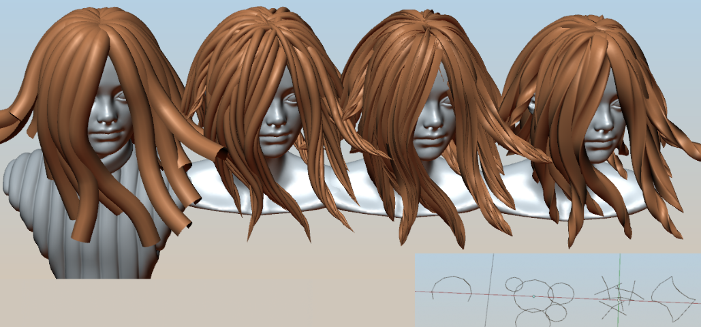

Adding/Update curve profile¶
To add or edit curve profile, click 'Add (Update) Profile' button located in top pie menu (Ctrl+Shift+H by default). Profile settings:
- profile type - Flat (gives traditional ribbons) or Round (results in tubes)
- profile width
- curves resolution along length, and perpendicular to curve direction
- offsetting curve upp or down from center - 'Strand Uplift' (for Flat profile only)
- making profile round or flat with 'Strand protrusion' parameter (for Flat profile only)
Edit curve profile¶
This option will let you edit curve profile object directly, by linking curve bevel object to scene and going into edit mode. This way you can manually edit profile object and get unique results. Examples of custom bevel profiles: 
Un-instance profile¶
If multiple hair objects are using same bevel curve profile, then updating profile on one of hair objects, will change profile on all other objects that use same profile object. To avoid this, use 'Un-instance profile' option - now profile can be changed independently of other objects.